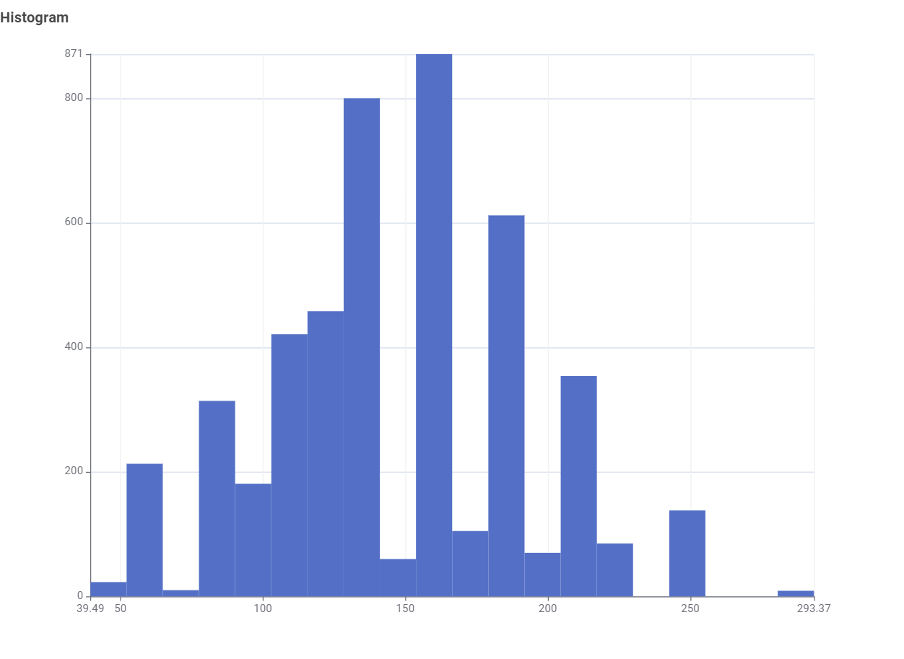
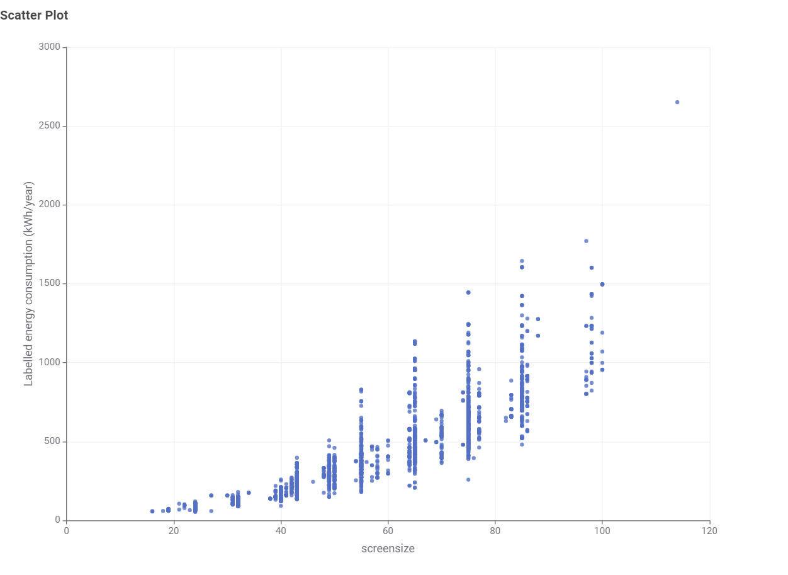
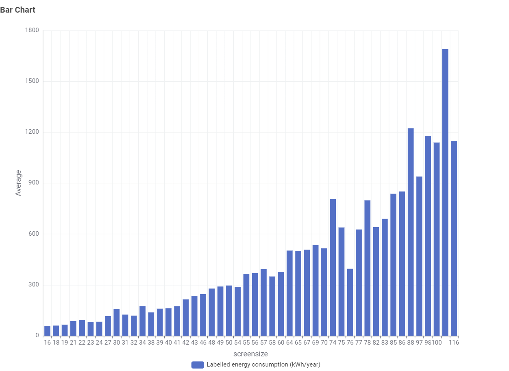
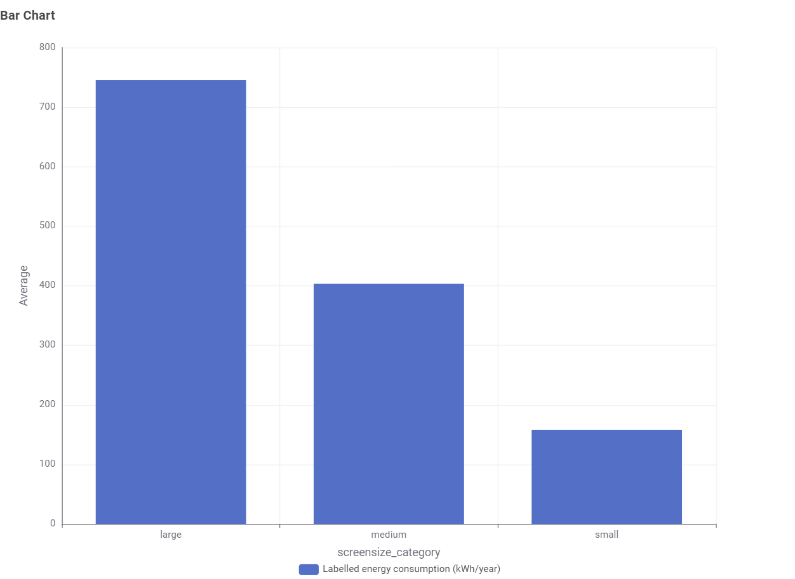
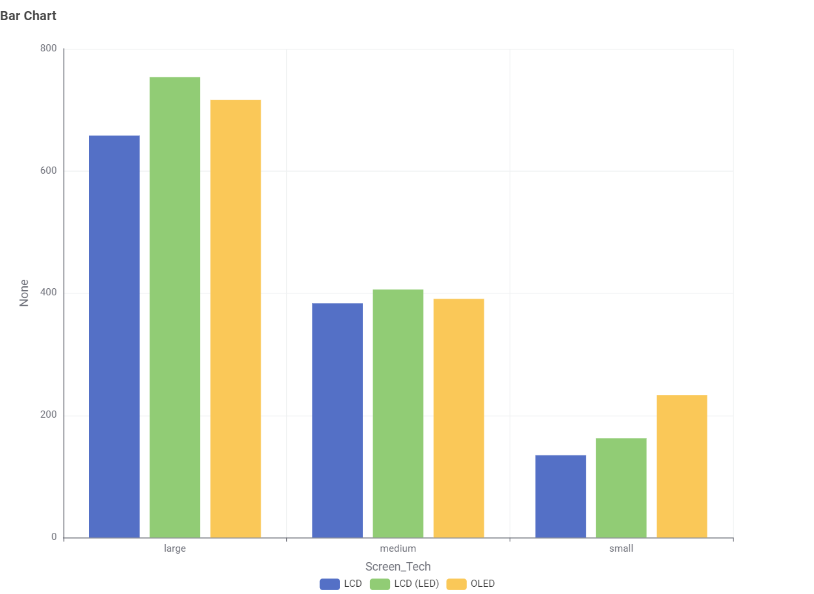

The Living Room Dilemma: Finding the Energy Sweet Spot
As televisions have grown from compact appliances into wall-filling centerpieces, their hidden running costs have climbed along with them. Using data from the Australian Energy Rating Database, we break down what you are actually paying for when choosing your next screen.
What’s Actually on the Showroom Floor?
Walk into any Australian retailer, and you will see dozens of screen choices. However, modern displays do not occupy a continuous range—they cluster heavily around fixed industrial panel cuts.
The market distribution shows dramatic spikes centered around 140 cm (55-inch) and 165 cm (65-inch) formats. Manufacturers optimise raw glass cutting to minimise waste, leaving odd sizes (like 150 cm or 175 cm) as rare anomalies, non-standard imports, or registration misclassifications.

The Area Trap: Why Power Doesn't Scale Linearly
It is easy to assume a 65-inch screen draws only a little more power than a 55-inch model. In reality, display surface area scales quadratically relative to diagonal inches. Lighting a massive display demands exponential energy.
Below 50 inches, annual energy consumption remains predictable, tightly bundled under 300 kWh/year. Past the 60-inch threshold, however, the scatter fans out widely. Premium high-brightness backlights, local dimming zones, and high dynamic range (HDR) processing cause power consumption to spike past 1,500 kWh/year for the largest panels.


Simplifying the Choice: Small vs. Medium vs. Large
Evaluating dozens of fractional screen sizes is impractical when shopping. By bucketing the market into three common categories—Small (<43"), Medium (44"–65"), and Large (>66")—the trade-offs become stark:

Does Panel Technology Change the Equation?
Shoppers frequently ask whether choosing an OLED display will penalise their energy bills compared to standard LED-backlit LCDs. The answer depends heavily on which size bracket you choose.
In the Medium tier (44"–65"), standard LCD (~380 kWh/yr), OLED (~390 kWh/yr), and LED-LCD (~405 kWh/yr) consume remarkably comparable energy. In the Small tier, OLEDs draw significantly more power because they are built as high-refresh gaming displays. In the Large tier, full-array LED backlights pull ahead as the highest continuous consumers.

Buyer Recommendation: Where to Find the Best Value
Based on our analysis of the Australian market data, here is the most cost-effective approach for your next upgrade:
1. Stay in the 55"–65" Sweet Spot
This medium bracket gives you the best balance of market competition, modern panel tech, and contained operational costs. Crossing the 65-inch threshold brings an average 86% jump in electricity use.
2. Don't Fear Medium OLEDs
If you want premium contrast and deep black levels in a 55" or 65" format, buy OLED with confidence. Their real-world power draw is almost identical to standard LED panels in this size class.
3. Check the kWh Label, Not Just Stars
Energy Star ratings measure efficiency relative to screen area. A 5-star 75-inch TV will still use far more electricity overall than a 3-star 55-inch display. Always compare total yearly kilowatt-hours.